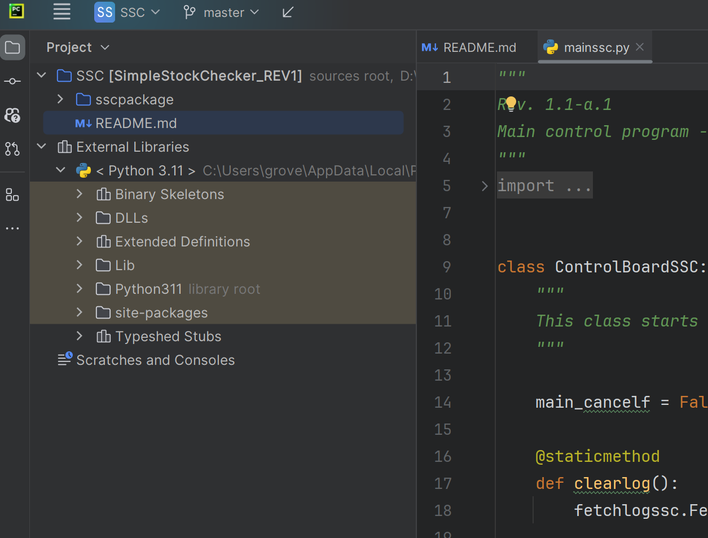

Grover Donlon
| 111 Drury Lane | grover.donlon@gmail.com |
|---|---|
| Brandenbergerling, DE 88811 | 12/12/23 |
| LinkedIn Profile |
Education
MBA > Master of Business Administration
Lake Forest Graduate School of Management
Certificates > CNC Programmer/Setup/Operator Certificate
BA > Bachelor of Arts - German Major
University of Wisconsin Madison
Employment
| Donlon Manufacturing LLC | 2014-Present |
|---|---|
|
Manage a manufacturing business that makes machine parts for the nuclear medicine industry. |
|
| PERI Formwork Systems | 2012-2014 |
|
Managed a stockyard of concrete formworks for the construction industry valued at over 3 million USD. |
Projects and Extras
| Simple Stock Checker A python application to help one research stocks. |
 |
|---|---|
| GGCODE An NC code editing application. |
 |
| My Coding Journey I Took 2 Courses at Wisconsin, picked it back up late 2021. |
|
| More Projects | Additional projects along the journey |